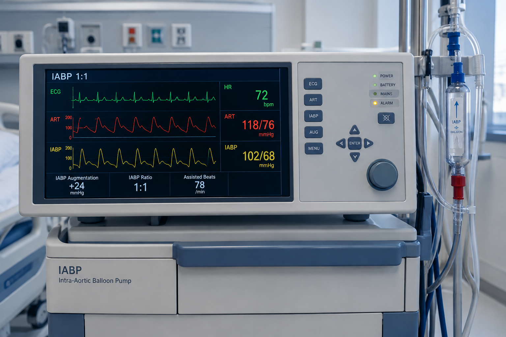

پمپ بالوت داخل آئورت (LABP)
پمپ بالون داخل آئورت
(LABP)
یک وسیله مکانیکی است که پرفیوژن اکسیژن میوکارد را افزایش می دهد و در عین حال برون ده قلبی را
افزایش می دهد.
این بالون از یک بالون پلی اتیلن استوانه ای تشکیل شده است که در آئورت قرار می گیرد و
ضربان متقابل می زند. به این معنی که به طور فعال در سیستول تخلیه می شود و با کاهش بار اضافی از طریق
اثر خلاء، جریان خون به جلو را افزایش می دهد.
این به طور فعال در دیاستول باد می کند و جریان خون را از
طریق جریان رتروگراد به عروق کرونر افزایش می دهد.